1.QtXlsx库安装
1.1 下载QtXlsx源码
GitHub地址：https://github.com/dbzhang800/QtXlsxWriter
1.2 解压
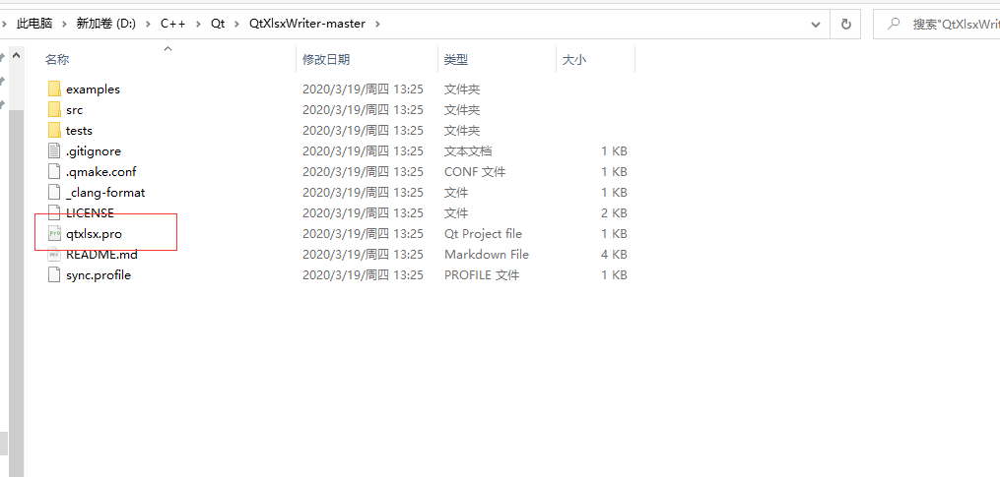
用Qt打开pro文件并构建(左下角的小锤子或者直接右键构建，只构建，不要运行)
- MinGW使用MinGW构建，MSVC用MSVC构建，注意对应版本
后续的构建操作还需要电脑有perl环境
官网链接: https://strawberryperl.com/
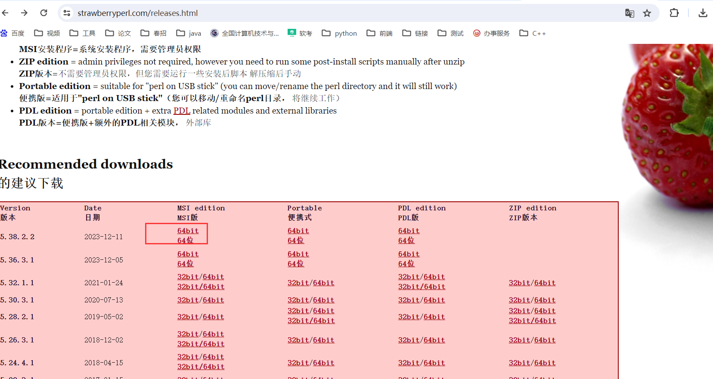
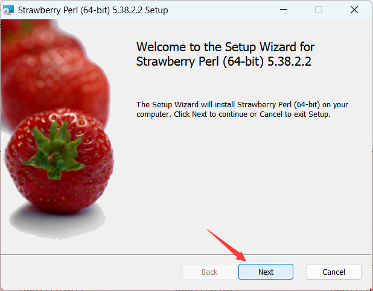
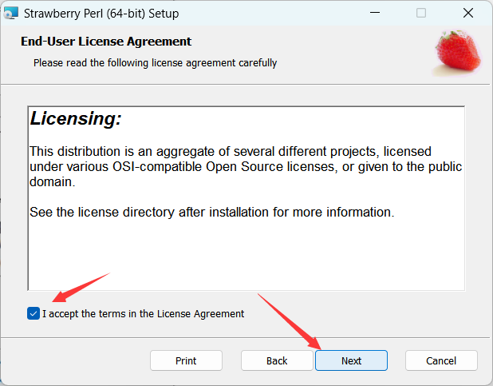
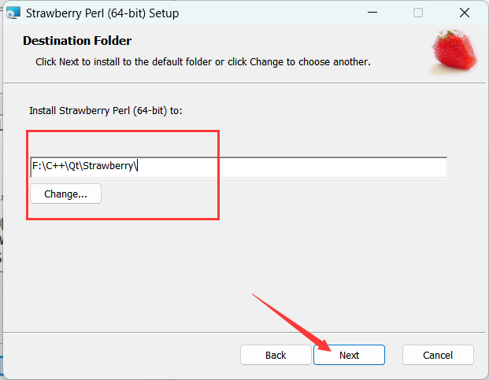
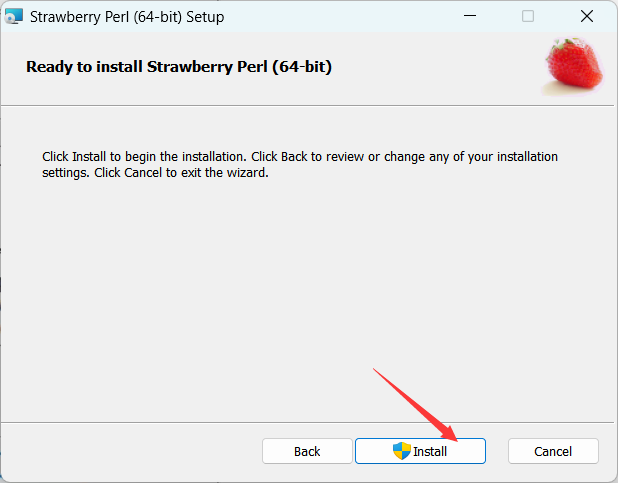
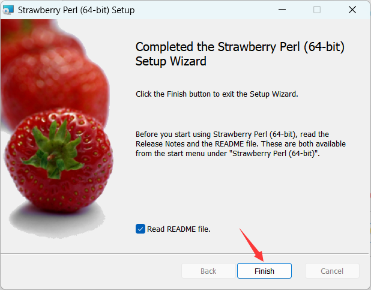
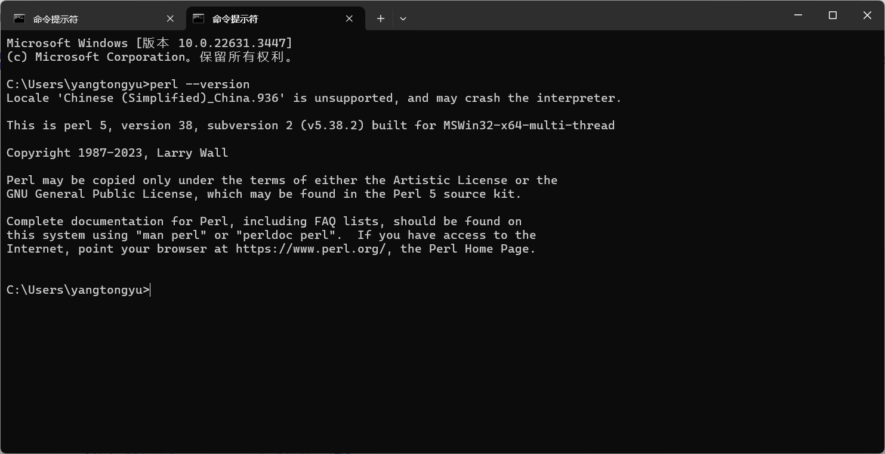
构建
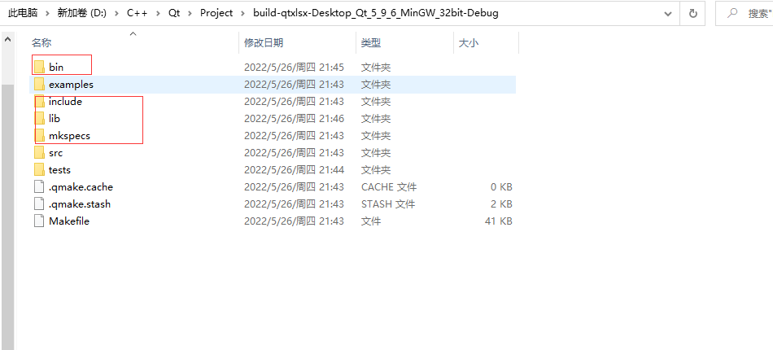
配置
- 将include文件夹中的 QtXlsx文件夹整个复制到 Qt安装目录中的incude文件夹D:\C++\Qt\Qt5.9.6\5.9.6\mingw53_32\include
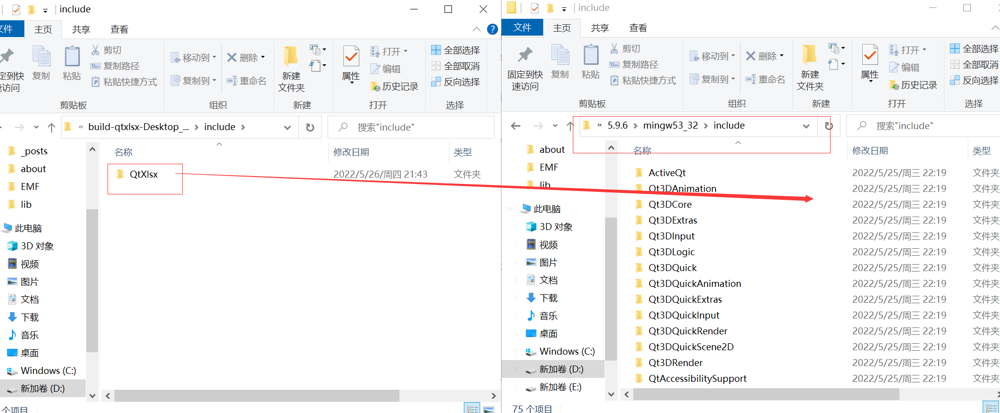
- 将lib文件夹中的prl文件复制到D:\C++\Qt\Qt5.9.6\5.9.6\mingw53_32\lib
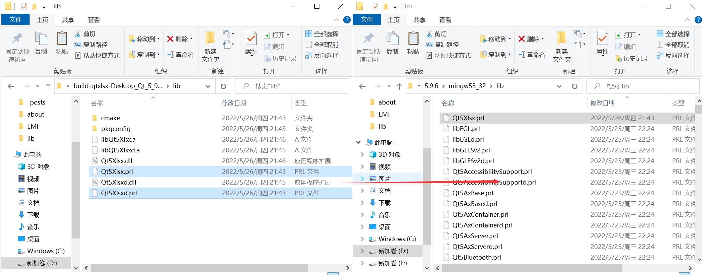
- 将lib文件夹中的dll文件复制到D:\C++\Qt\Qt5.9.6\5.9.6\mingw53_32\bin
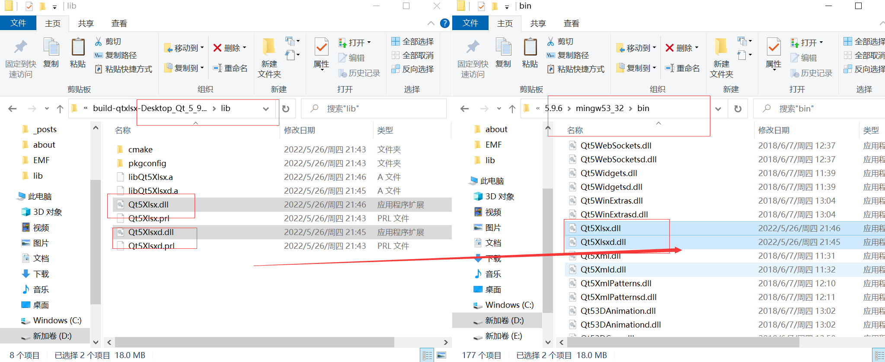
将mkspecs文件夹中modules子文件夹pri文件复制到 D:\C++\Qt\Qt5.9.6\5.9.6\mingw53_32\mkspecs\modules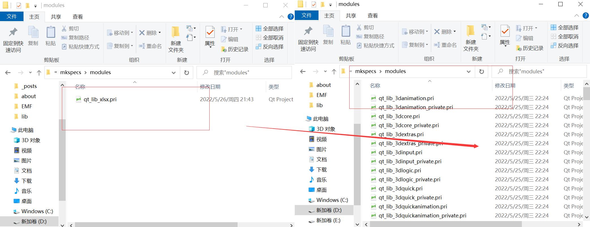
将lib下的libQt5Xlsxd.a、libQt5Xlsx.a复制到D:\C++\Qt\Qt5.9.6\5.9.6\mingw53_32\lib下
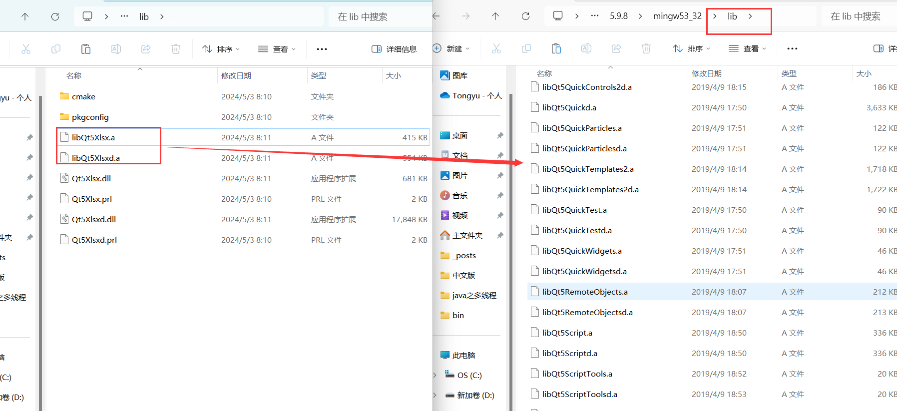
补充：若使用MSVC，则同样的步骤复制到对应的文件夹下
2.使用
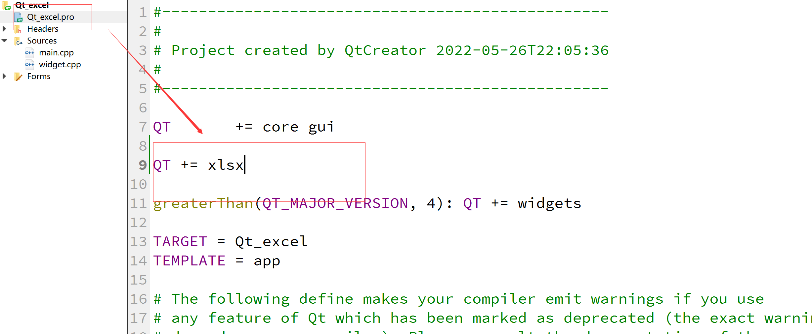
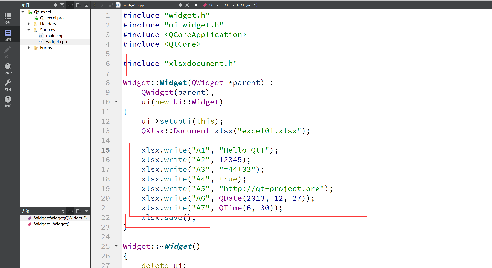
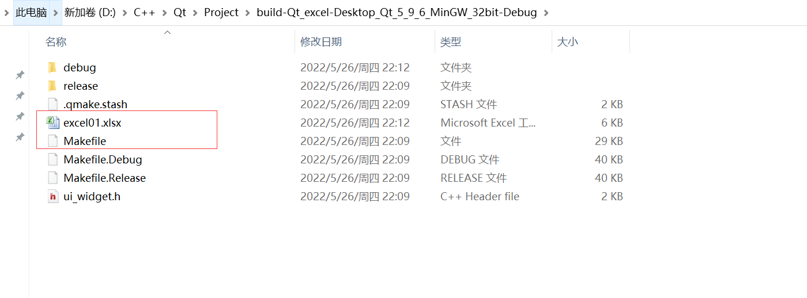
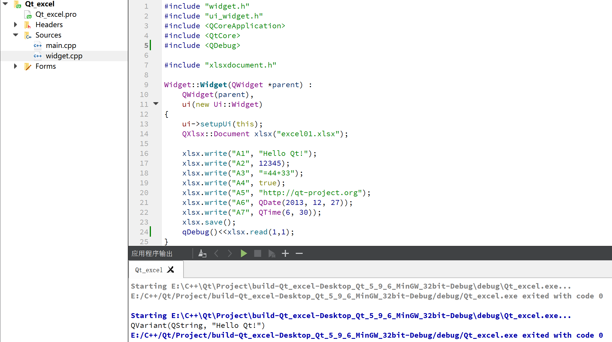
3.打开和存储xlsx文件
1 | QXlsx::Document xlsx(filePathName);//打开一个已经存在文件 |
4.格式设置
1.设置列宽和行高
1 | xlsx.setColumnWidth(8,15);//设置第8列的列宽为15 |
2.设置单元格格式
1 | QXlsx::Format format; //设置单元的样式 |
5.查询excel基本属性
1 | xlsx.dimension().rowCount()//行数 |
6.插入数据
1 | QXlsx::Document xlsx("excel01.xlsx"); |
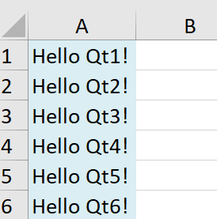
7.删除数据
1 | xlsx.write("A3",""); |
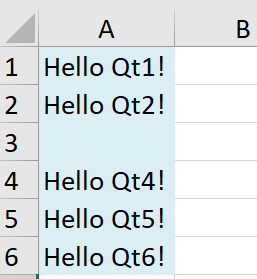
8.修改数据
1 | xlsx.write("A4","Hello Qt4_1"); |
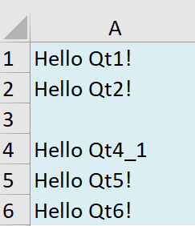
9.查询数据
1 | xlsx.read(1,1); |
返回
1 | QVariant(QString, "Hello Qt1!") |
10.工作表操作
1 | // Create the first sheet (Otherwise, default "Sheet1" will be created) |
1 | QStringList sheetNames() const |
功能说明： 查询Excel中所有的工作表（Sheet）名称；
返回值： 所有工作表的名称列表；
1 | bool addSheet(const QString &name = QString(), AbstractSheet::SheetType type = AbstractSheet::ST_WorkSheet) |
功能说明： 在末尾创建一个名称为name，类型为type的工作表；
参数name： 创建的工作表的名称；
参数type： 创建的工作表的类型，可省略；
- ST_WorkSheet：表格工作表
- ST_ChartSheet：图表工作表
- ST_DialogSheet：还不支持
- ST_MacroSheet：还不支持
返回值： 创建成功则返回true，失败返回false；
- 如果名称已存在则创建失败；
- 如果是ST_DialogSheet、ST_MacroSheet也创建失败；（注意这种创建失败有bug，创建失败后输入的name会被保存，下次不能再创建这个名称的工作表，不过不影响使用， 修复方法：在xlsxworkbook.cpp文件中的Q_ASSERT(false);下一行添加return sheet;即可）
1 | bool insertSheet(int index, const QString &name = QString(), AbstractSheet::SheetType type = AbstractSheet::ST_WorkSheet) |
- 功能说明： 在指定位置插入工作表，可设置工作表名称和类型参数index： 插入工作表的位置，如果>=0则在开始位置插入工作表，如果0<index<sheet总数则在指定位置插入工作表；
- 参数name： 工作表名称；
- 参数type： 工作表类型；
- 返回值： 插入成功返回true，失败返回false；
- 失败原因与addSheet相同；
- 如果插入工作表位置>工作表总数则插入失败；
1 | bool selectSheet(const QString &name) |
- 功能说明： 将指定名称的工作表设置未活动工作表（可编辑）；
- 参数name： 工作表名称；
- 返回值： 设置成功返回true，失败返回false；
- 如果指定名称的工作表不存在则设置失败；
1 | bool renameSheet(const QString &oldName, const QString &newName) |
- 功能说明： 将名为oldName的工作表重命名未newName；
- 参数oldName： 已有工作表名称；
- 参数newName： 重命名后的工作表名称；
- 返回值： 重命名成功返回true，失败返回false；
- 如果oldName不存在则重命名失败；
- 如果newName已存在则重命名失败；
- 如果oldName等于newName则重命名失败；
1 | bool copySheet(const QString &srcName, const QString &distName = QString()) |
- 功能说明： 将指定的srcName工作表拷贝为distName，两个工作表内容相同；
- 参数srcName： 已有的需要拷贝的工作表名称；
- 参数distName： 拷贝后的工作表名称；
- 返回值： 拷贝成功返回true，失败返回false；
- 如果srcName不存在则拷贝失败；
- 如果distName已存在则拷贝失败；
- 如果srcName等于distName则拷贝失败；
1 | bool moveSheet(const QString &srcName, int distIndex) |
- 功能说明： 根据输入的工作表名称，将工作表移动到指定位置；
- 参数srcName： 需要移动的工作表名称；
- 参数distIndex： 需要将工作表移动到的位置，distIndex<=0则移动到开始位置，distIndex>=sheet总数则移动到最后位置，如果0< distIndex <sheet总数则移动到指定位置；
- 返回值： 移动成功返回true，失败返回false；
- 如果需要移动的工作表名称不存在则失败；
1 | bool deleteSheet(const QString &name) |
- 功能说明： 删除指定名称的工作表；
- 参数name： 需要参数的工作表名称；
- 返回值： 删除成功返回true，失败返回false；
- 如果指定名称的工作表不存在则返回失败。